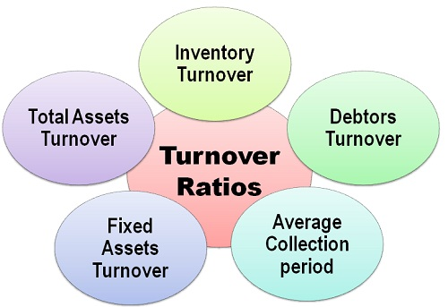
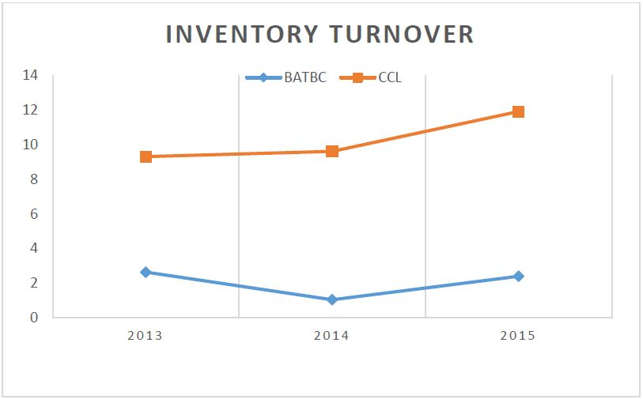
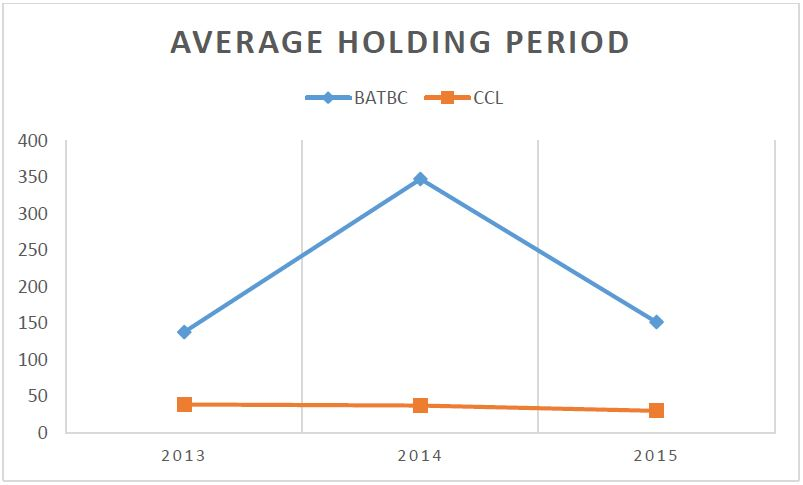
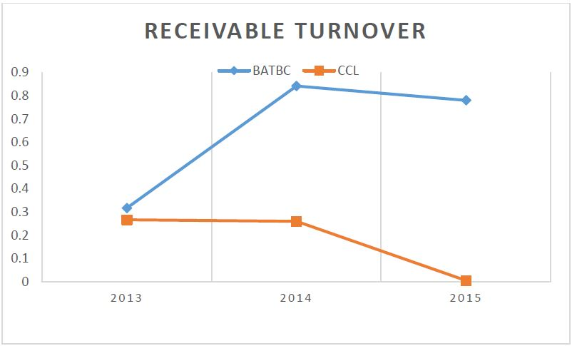
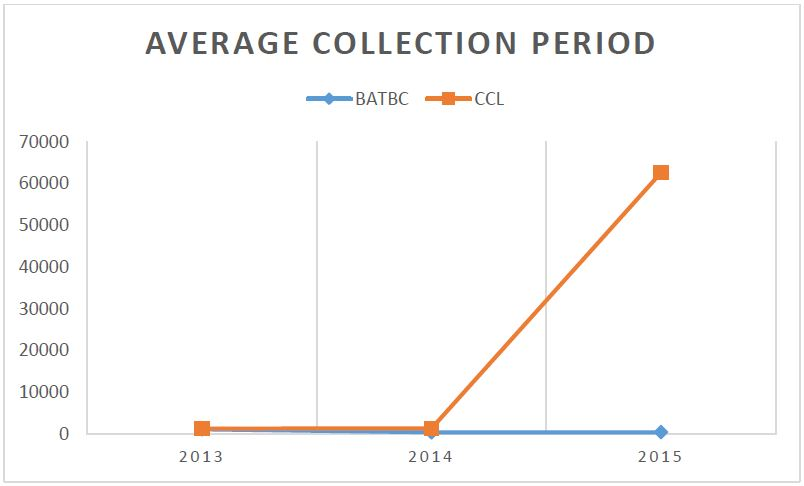
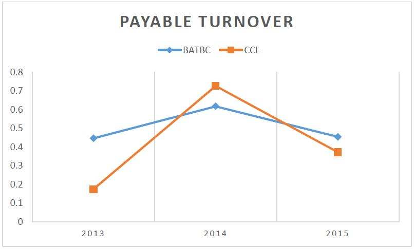
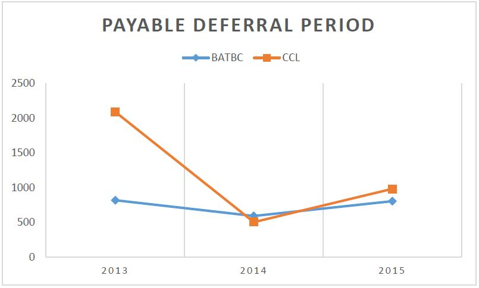
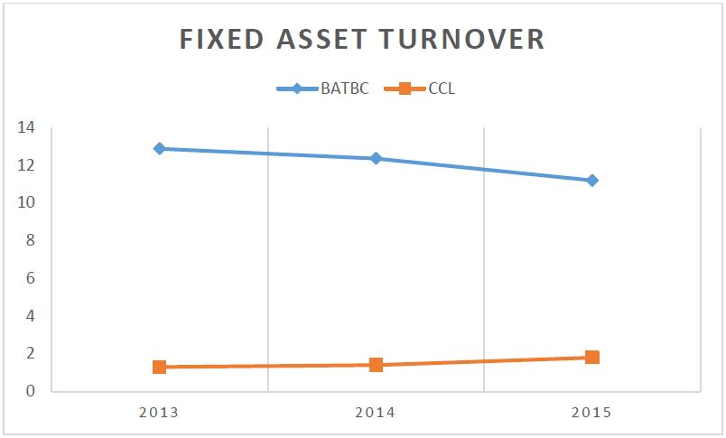
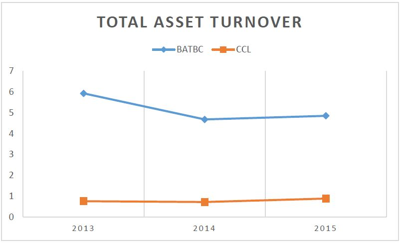

Financial Ratios
Activity Ratios
Activity ratios measure a firm's ability to convert different accounts within its balance sheets into cash or sales. Activity ratios measure the relative efficiency of a firm based on its use of its assets, leverage or other such balance sheet items and are important in determining whether a company's management is doing a good enough job of generating revenues and cash from its resources. Companies typically try to turn their production into cash or sales as fast as possible because this will generally lead to higher revenues, so analysts perform fundamental analysis by using common ratios such as the total assets turnover ratio and inventory turnover. Activity ratios measure the amount of resources invested in a company's collection and inventory management. Because businesses typically operate using materials, inventory and debtors, activity ratios determine how well an organization manages these areas. Activity ratios are one major category in which a ratio may be classified; other ratios may be classified as measurements of liquidity, profitability or leverage. Activity ratios gauge an organization's operational efficiency and profitability. Activity ratios are most useful when compared to competitor or industry to establish whether an entity's processes are favorable or unfavorable. Activity ratios can form a basis of comparison across multiple reporting periods to determine changes over time.

The Activity Ratios are given below:
Inventory Turnover
Inventory turnover is a ratio showing how many times a company's inventory is sold and replaced over a period of time. The days in the period can then be divided by the inventory turnover formula to calculate the days it takes to sell the inventory on hand. It is calculated as sales divided by average inventory.
Inventory turnover measures how fast a company is selling inventory and is generally compared against industry averages. A low turnover implies weak sales and, therefore, excess inventory. A high ratio implies either strong sales and/or large discounts.
For example:

BATBC
Inventory turnover of BATBC was 2.6410313 in 2013; 1.04970697 in 2014 and 2.40346963 in 2015, which is good.CCL
Inventory turnover of CCL was 9.3156393 in 2013; 9.61886557 in 2014 and 11.9103944 in 2015, which is good.Comparatively CCL is in a better condition than BATBC.
Average Holding Period
The average holding period is the average number of days it takes for a firm to sell off inventory. The formula to calculate the average holding period is C/G x 365, where C is the average cost of inventory at its present level, and G is the cost of goods sold (COGS).
Also referred to as days' sales in inventory (DSI), the average holding period is a metric that analysts use to determine the efficiency of sales. It tells the analyst how fast inventory is turning over at one company compared to another. The faster a company can sell inventory for a profit, the more profitable it is. However, a company could employ a strategy of maintaining higher levels of inventory for discounts or long-term planning efforts. While the metric can be used as a measure of efficiency, it should be confirmed with other measures of efficiency, such as gross profit margin, before making any conclusions.
For example:

BATBC
Average holding period of BATBC was 138.20359 in 2013; 347.716087 in 2014 and 151.863787 in 2015, which is not good.CCL
Average holding period of CCL was 39.181423 in 2013; 37.9462627 in 2014 and 30.6455006 in 2015, which is good.Comparatively CCL is in better position than BATBC.
Receivable Turnover
An accounting measure used to quantify a firm's effectiveness in extending credit and in collecting debts on that credit. The receivables turnover ratio is an activity ratio measuring how efficiently a firm uses its assets.
Receivables turnover ratio can be calculated by dividing the net value of credit sales during a given period by the average accounts receivable during the same period. Average accounts receivable can be calculated by adding the value of accounts receivable at the beginning of the desired period to their value at the end of the period and dividing the sum by two.
The receivables turnover ratio is most often calculated on an annual basis, though this can be broken down to find quarterly or monthly accounts receivable turnover as well.
In essence, the receivables turnover ratio indicates the efficiency with which a firm manages the credit it issues to customers and collects on that credit. Because accounts receivable are moneys owed on a credit agreement without interest, by maintaining accounts receivable firms are indirectly extending interest-free loans to their clients. As such, because of the time value of money principle, a firm loses more money the longer it takes to collect on its credit sales.
For example:

BATBC
Receivable turnover of BATBC was 0.3173429 in 2013; 0.84165401 in 2014 and 0.78021802 in 2015, which is good.CCL
Receivable turnover of CCL was 0.2668663 in 2013; 0.26049315 in 2014 and 0.0058321 in 2015, which is not goodComparatively BATBC is better than CCL.
Average Collection Period
The average collection period is the approximate amount of time that it takes for a business to receive payments owed in terms of accounts receivable. The average collection period is calculated by dividing the average balance of accounts receivable by total net credit sales for the period and multiplying the quotient by the number of days in the period.
The average collection period represents the average number of days between the date a credit sale is made and the date payment is received from the credit sale. The average balance of accounts receivable is calculated by adding the beginning balance in accounts receivable and ending balance in accounts receivable and dividing the total by 2. When calculating the average collection period for an entire year, 360 may be used as the number of days in one year for simplicity.
For example:

BATBC
Average collection period of BATBC was 1150.1756 in 2013; 433.669887 in 2014 and 467.817959 in 2015, which is good.CCL
Average collection period of CCL was 1367.7262 in 2013; 1401.18846 in 2014 and 62584.6547 in 2015, which is not good.Comparatively BATBC is in better condition than CCL.
Payable Turnover
The accounts payable turnover ratio is a short-term liquidity measure used to quantify the rate at which a company pays off its suppliers. Accounts payable turnover ratio is calculated by taking the total purchases made from suppliers, or cost of sales, and dividing it by the average accounts payable amount during the same period.
The measure shows investors how many times per period the company pays its average payable amount. Accounts payable, also known as payables, represents short-term debt obligations that a company must pay off. The accounts payable is listed under a company's current liabilities on its balance sheet. Accounts payable are also part of households because people may be subject to pay off their short-term debt provided by creditors, such as credit card companies.
For example:

BATBC
Payable turnover of BATBC was 0.446892 in 2013; 0.61723445 in 2014 and 0.4542791 in 2015, which is good.CCL
Payable turnover of CCL was 0.1747423 in 2013; 0.7263934 in 2014 and 0.37223968 in 2015, which is good.Comparatively CCL is in better condition than BATBC.
Payable Deferral Period
Days payable outstanding (DPO) is a company's average payable period. Days payable outstanding tells how long it takes a company to pay its invoices from trade creditors, such as suppliers. DPO is typically looked at either quarterly or yearly.
Companies must strike a delicate balance with DPO. The longer they take to pay their creditors, the more money the company has on hand, which is good for working capital and free cash flow. But if the company takes too long to pay its creditors, the creditors will be unhappy. They may refuse to extend credit in the future, or they may offer less favourable terms. Also, because some creditors give companies a discount for timely payments, the company may be paying more than it needs to for its supplies. If cash is tight, however, the cost of increasing DPO may be less than the cost of foregoing that cash earlier and having to borrow the shortfall to continue operations.
For example:

BATBC
Payable deferral period of BATBC was 816.75206 in 2013; 591.347416 in 2014 and 803.470823 in 2015, which is good.CCL
Payable deferral period of CCL was 2088.7907 in 2013; 502.482536 in 2014 and 980.551028 in 2015, which is good.Comparatively CCL is in better condition than BATBC.
Working Capital Turnover
DWorking capital turnover is a measurement comparing the depletion of working capital used to fund operations and purchase inventory, which is then converted into sales revenue for the company. The working capital turnover ratio is used to analyze the relationship between the money that funds operations and the sales generated from these operations.
The working capital turnover ratio measures how well a company is utilizing its working capital for supporting a given level of sales. Because working capital is current assets minus current liabilities, a high turnover ratio shows that management is being very efficient in using a company’s short-term assets and liabilities for supporting sales. In contrast, a low ratio shows a business is investing in too many accounts receivable (AR) and inventory assets for supporting its sales. This may lead to an excessive amount of bad debts and obsolete inventory.
For example:

BATBC
Working capital turnover of BATBC was 9.6300771 in 2013; 8.5961579 in 2014 and 7.9076964 in 2015, which is good.CCL
Working capital turnover of CCL was 0.433239 in 2013; 0.27579882 in 2014 and 0.35049046 in2015, which is not good.Comparatively BATBC is in better condition than CCL.
Fixed Asset Turnover
The fixed-asset turnover ratio is, in general, used by analysts to measure operating performance. It is a ratio of net sales to fixed assets. This ratio specifically measures how able a company is to generate net sales from fixed-asset investments, namely property, plant and equipment (PP&E), net of depreciation. In a general sense, a higher fixed-asset turnover ratio indicates that a company has more effectively utilized investment in fixed assets to generate revenue.
The fixed-asset turnover ratio is commonly used as a metric in manufacturing industries that make substantial purchases for PP&E in order to drive up output. When a company makes such significant purchases, wise investors closely monitor this ratio in subsequent years, to observe the effectiveness of such an investment in fixed assets.
In general, investments in fixed assets are representative of the sole, largest component of the company’s total assets. The ratio, calculated on an annual basis, is constructed in a way that is purposeful in reflecting how efficiently a company, primarily the company’s management team, has used these substantial assets to generate revenue for the firm.
For example:

BATBC
Fixed asset turnover of BATBC was 12.872026 in 2013; 12.3520537 in 2014 and 11.1909319 in 2015, which is good.CCL
Fixed asset turnover of CCL was 1.2976918 in 2013; 1.40502661 in 2014 and 1.79695135 in 2015, which is good.Comparatively BATBC is in good condition than CCL.
Total Asset Turnover
Asset turnover ratio is the ratio of the value of a company’s sales or revenues generated relative to the value of its assets. The Asset Turnover ratio can often be used as an indicator of the efficiency with which a company is deploying its assets in generating revenue.
Asset Turnover = Sales or Revenues / Total Assets
Generally speaking, the higher the asset turnover ratio, the better the company is performing, since higher ratios imply that the company is generating more revenue per dollar of assets. Yet, this ratio can vary widely from one industry to the next. As such, considering the asset turnover ratios of an energy company and a telecommunications company will not make for an accurate comparison. Comparisons are only meaningful when they are made for different companies within the same sector.
Asset turnover is typically calculated over an annual basis using either the fiscal or calendar year. The total assets number used in the denominator can be calculated by taking the average of assets held by a company at the beginning of the year and at the year’s end.
For example:

BATBC
Total asset turnover of BATBC was 5.9349496 in 2013; 4.68345385 in 2014 and 4.85662819 in 2015, which is good.CCL
Total asset turnover of CCL was 0.7589289 in 2013; 0.71817108 in 2014 and 0.88538468 in 2015, which is good.Comparatively BATBC is in good condition than CCL.